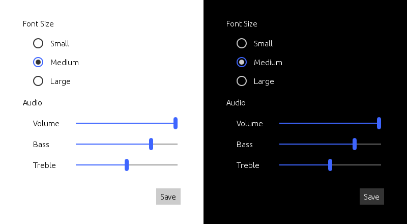
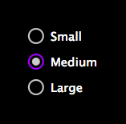

Universal Style
The Universal Style is based on the Microsoft Universal Design Guidelines. More...
| Import Statement: | import Qt.labs.controls.universal 1.0 |
Attached Properties
Detailed Description
The Universal style is a device-agnostic style based on the Microsoft Universal Design Guidelines. The Universal style has been designed to look good on all devices, from phones and tablets to PCs.

The Universal style in light and dark themes
Note: The Universal style is not a native Windows 10 style. The Universal style is a 100% cross-platform Qt Labs Controls style implementation that follows the Microsoft Universal Design Guidelines. The style runs on any platform, and looks more or less identical everywhere. Minor differences may occur due to differences in available system fonts and font rendering engines.
Customization
The Universal style allows customizing two attributes, theme and accent. The following example illustrates how to create a red stop button with light text:
import QtQuick 2.0 import Qt.labs.controls 1.0 import Qt.labs.controls.universal 1.0 Button { text: "Stop" highlighted: true Universal.accent: Universal.Red Universal.theme: Universal.Dark } |
Both attributes can be specified for any window or item, and they automatically propagate to children in the same manner as fonts. In the following example, the window and all three radio buttons appear in the dark theme using a violet accent color:
import QtQuick 2.0 import Qt.labs.controls 1.0 import Qt.labs.controls.universal 1.0 ApplicationWindow { visible: true Universal.theme: Universal.Dark Universal.accent: Universal.Violet Column { anchors.centerIn: parent RadioButton { text: qsTr("Small") } RadioButton { text: qsTr("Medium"); checked: true } RadioButton { text: qsTr("Large") } } } |  |
Note: The Universal style must be separately imported to gain access to these style-specific attributes. It should be noted that regardless of the references to the Universal style, the same application code runs with any other style. The Universal style-specific attributes only have an effect when the application is run with the Universal style. Furthermore, in case of explicit Universal style-specific references, the Universal style must be deployed with the application.
Note: Types in the Qt.labs module are not guaranteed to remain compatible in future versions.
Attached Property Documentation
Universal.accent : color |
This attached property holds the accent color of the theme. The property can be attached to any window or item. The value is propagated to children.
Even though the accent can be any color, it is recommended to use one of the pre-defined accents that have been designed to work well with the rest of the Universal style palette:
| Constant | Description |
|---|---|
Universal.Lime | Lime (#A4C400) |
Universal.Green | Green (#60A917) |
Universal.Emerald | Emerald (#008A00) |
Universal.Teal | Teal (#00ABA9) |
Universal.Cyan | Cyan (#1BA1E2) |
Universal.Cobalt | Cobalt (#3E65FF, default) |
Universal.Indigo | Indigo (#6A00FF) |
Universal.Violet | Violet (#AA00FF) |
Universal.Pink | Pink (#F472D0) |
Universal.Magenta | Magenta (#D80073) |
Universal.Crimson | Crimson (#A20025) |
Universal.Red | Red (#E51400) |
Universal.Orange | Orange (#FA6800) |
Universal.Amber | Amber (#F0A30A) |
Universal.Yellow | Yellow (#E3C800) |
Universal.Brown | Brown (#825A2C) |
Universal.Olive | Olive (#6D8764) |
Universal.Steel | Steel (#647687) |
Universal.Mauve | Mauve (#76608A) |
Universal.Taupe | Taupe (#87794E) |
Universal.theme : enumeration |
This attached property holds whether the theme is light or dark. The property can be attached to any window or item. The value is propagated to children.
Available themes:
| Constant | Description |
|---|---|
Universal.Light | Light theme (default) |
Universal.Dark | Dark theme |